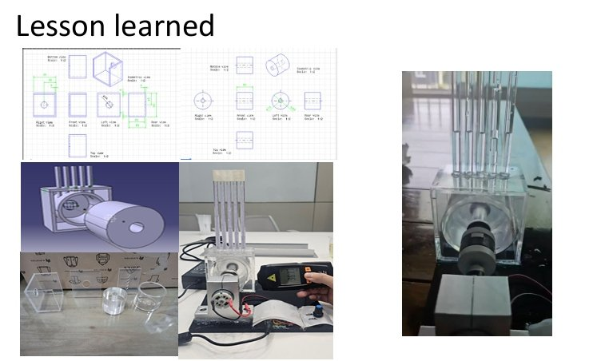
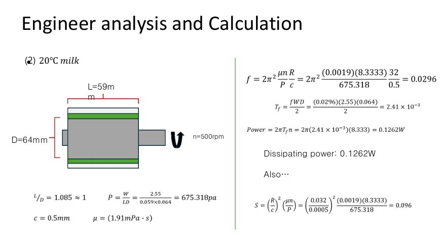
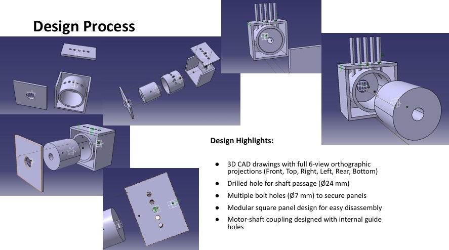
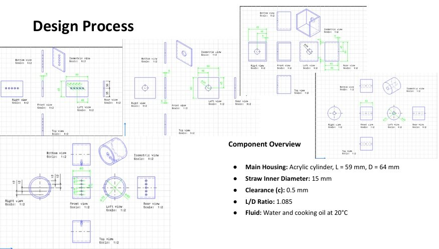
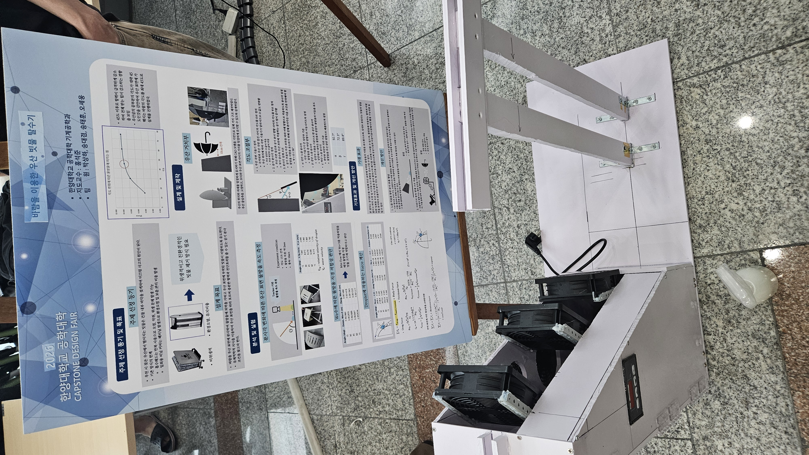

송태훈 Song Taehoon
Mechanical Engineering · BETTER Lab · Hanyang University ERICA
학부 1학년부터 4학년 1학기까지, 기계공학의 기초에서 출발해 열·유체·설계 과목을 순차적으로 쌓아 왔습니다. 3학년부터는 BETTER Lab에서 학부연구생으로 Ansys Icepak·Fluent·CFX 기반 열유체 시뮬레이션을 수행하며, 자연모사 나노 표면 기술을 방산·열관리 시스템에 접목하는 문제의식을 키우고 있습니다.
저는 공학 문제를 실험 · 해석 · 설계 세 축에서 동시에 다루는 엔지니어가 되고 싶습니다. 1학년 CADD 수업에서는 프라모델 부품을 버니어캘리퍼스로 직접 실측해, 도면 한 장 없이 CATIA로 전체 3D 모델을 완성한 것이 CAD·설계 역량의 첫 발판이 되었습니다.
기계가공실습을 통해 선반·밀링을 직접 다뤘고, 기계설계 과목에서는 유체베어링 기구를 설계·제작했으며, 유체역학 텀프로젝트에서는 라디에이터 핀 배열에 따른 열효율을 분석했습니다. 최근에는 열시스템 설계 과목에서 판형 열교환기 설계 프로그램을 직접 개발했고, 유체기계 설계에서는 CFX를 이용해 축류형 유체기계 최적화를 완료했습니다.
BETTER Lab에서는 자동차 건조로 CFD 해석 과제를 진행 중이며, Ansys Overset 기법을 학습하며 상변화 열전달 · 계면 현상의 해석 전략을 심화하고 있습니다. 장기적으로는 나노 구조 표면을 활용한 열전달 증진·응축·비등 제어 기술을 국방·항공 우주 시스템의 열관리에 응용하는 연구를 수행하고자 합니다. 이를 위해 2027년 자대 BETTER Lab 석박통합과정 진학을 준비 중입니다.
자연모사 나노 구조 표면과 열전달 현상을 방산·국방 시스템의 열관리 문제에 적용하는 연구에 관심이 있습니다. 해석(CFD), 설계(CAD·프로그래밍), 실험(계측·가공)의 세 축을 모두 활용할 수 있는 연구 방향을 선호합니다.
마이크로·나노 구조 표면을 이용한 비등·응축 제어, 자연모사 기반 초친수·초발수 표면의 열유체적 응용.
Ansys Fluent · Icepak · CFX 기반 열교환기, 축류형 유체기계, 자동차 건조로 등 산업 시스템의 수치 해석 및 최적화.
고발열 전자장비·추진체의 열관리, 센서·전차·항공 플랫폼에 적용 가능한 나노 표면 기반 냉각 기술 연구 지향.
1학년 입학 직후 합격수기 최우수상부터, 현재 BETTER Lab 학부연구생 활동까지. 각 학년별 대표 프로젝트·성취·연구 활동을 시간 순서로 배치했습니다. 로드맵 하단의 진행중 카드는 현재 동시에 수행 중인 프로젝트들입니다.
입학 직후, 수험 경험과 학습 전략을 담은 합격수기로 최우수상을 수상했습니다.


도면 없이 버니어캘리퍼스로 프라모델 부품을 실측하여 CATIA V5로 전체 조립 모델을 완성했습니다. 치수 측정 → 스케치 → 파트 모델링 → 어셈블리의 전 과정을 독립적으로 수행했습니다.
선반과 밀링 머신을 직접 조작하여 금속 부품을 가공했습니다. 공차 관리, 절삭 조건 설정, 측정 검사까지 실습했습니다.
핀 간격·배열 방식(인라인 vs. 엇갈림)에 따른 라디에이터 열효율을 Ansys Fluent로 비교 분석했습니다.


BETTER Lab에 학부연구생으로 합류하여 Ansys Icepak 기반 전자 패키지 열해석을 수행했습니다. 히트싱크 형상·팬 배치에 따른 열저항을 분석하고 냉각 성능을 비교했습니다.


유체 윤활 이론을 적용한 저널 베어링 기구를 설계하고 실제 시제품을 제작했습니다. 허용 하중·마찰력 계산, CAD 도면 작성, 가공 후 조립 검증까지 수행했습니다.




공학수학(Engineering Mathematics) 과목 튜터로 활동하며 8주간 동료 학습을 이끌었습니다. 우수 튜터로 선정되어 수료증을 받았습니다.


열시스템설계 과목 프로젝트. Python GUI로 판형 열교환기(PHE) 설계 계산 프로그램을 개발하고, 실제 WWSHP(수열원 히트펌프) 시스템에 적용하는 산업 구상까지 수행했습니다.
.png)
.png)
.png)
.png)
.png)
.png)
.png)
.png)
.png)
유체기계설계 과목 프로젝트. Ansys CFX와 Kriging 대리모델을 결합한 데이터 기반 최적화로 원심펌프 임펠러 형상을 최적화했습니다. 설계 목표 양정 ≥ 37m를 달성했으며, Kriging 모델 예측 오차 0.08% 이내로 모델 신뢰성을 검증했습니다.


우산 표면의 물방울에 공기 항력을 가해 이탈시키는 비접촉 방식의 우산 제습 솔루션. 2026 한양대학교 공학대학 캡스톤디자인 페어에서 발표했습니다.



BETTER Lab 학부연구생 과제. 자동차 도장 건조로 내부의 열유동을 Ansys Fluent Overset Mesh 기법으로 해석합니다. 복잡한 차체 형상과 대류 열전달을 동시에 모델링합니다.


1학년부터 4학년 1학기까지의 주요 과목별 성적입니다. 전공 심화 과목에서 일관된 우수한 성취를 보여왔습니다.